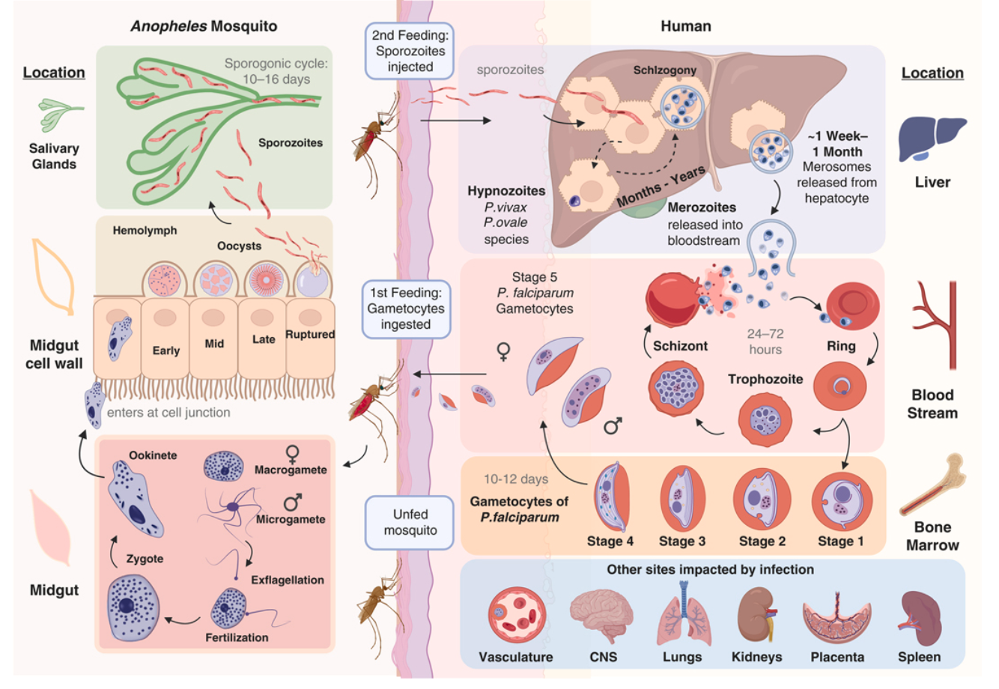
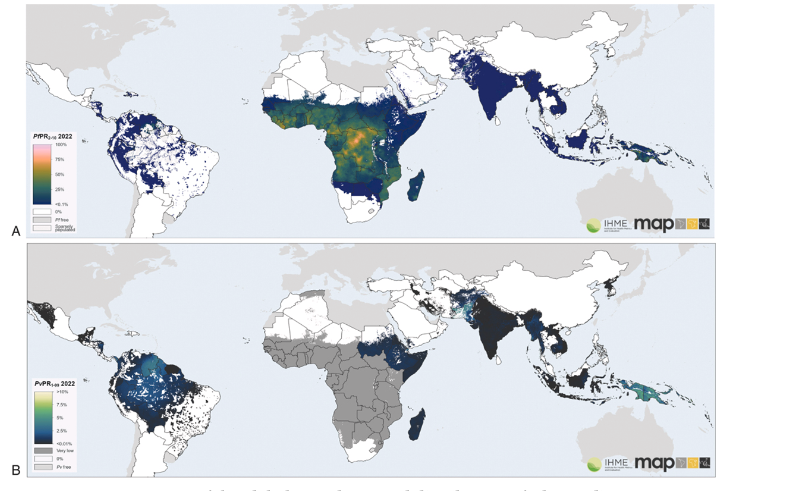
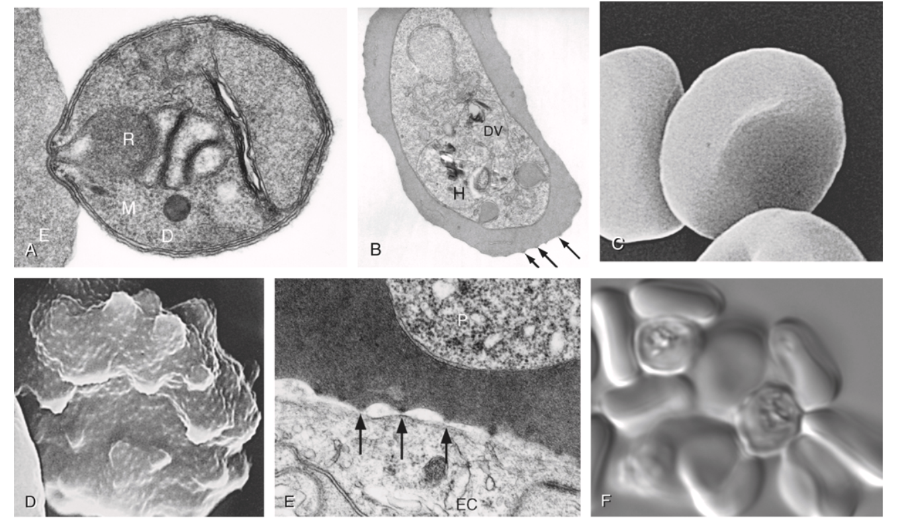

Infectious Diseases

Welcome
Welcome to the slide repository and resources page for Prof. Lewis (University of Padua).
Instructions for accessing UptoDate are found here. Treviso students: recorded lectures can be found here.
Lecture Topics
| Topic | Description |
|---|---|
| Principles of Antibiotic Therapy | Mechanisms of action, PK/PD, susceptibility testing, and therapeutic drug monitoring |
| Antibiotic Allergies | Diagnosis and management of penicillin and antibiotic allergy, de-labeling strategies |
| Fever of Unknown Origin | Definitions, diagnostic workup, and common infectious and non-infectious causes |
| Intraabdominal Infections | Peritonitis, appendicitis, and hepatobiliary infections |
| Immunosuppression & Infection Risk | Immunosuppression principles and infection risk in the compromised host |
| Febrile Neutropenia | Risk assessment, empiric therapy, and prophylaxis in neutropenic patients |
| Infectious Diarrhea | Etiology, syndromic testing, and management of acute infectious diarrhea |
| Malaria & Leishmaniasis | Epidemiology, diagnosis, and treatment of malaria and leishmaniasis |
| Invasive Fungal Infections | Candidiasis, aspergillosis, cryptococcosis, and antifungal therapy |
Definition
- The spectrum of malaria infections spans six species of Plasmodium and ranges from asymptomatic infections (in those with acquired anti-disease immunity) to uncomplicated malaria to life-threatening severe malaria disease.
- Uncomplicated malaria presents with fever, headaches, body aches, and malaise, and can easily be mistaken for “flu.”
- Severe malaria can develop into a life-threatening illness very quickly and should be treated as a medical emergency.
Epidemiology
- Malaria is endemic in tropical and subtropical areas of Africa, the Americas, Asia, and Oceania (see Figure 2).
- Among populations with regular repeated exposure, the highest risk of disease is in younger children and pregnant women.
- Malaria is most often transmitted by the bite of a female Anopheles mosquito, but can also be acquired congenitally or by blood transfusion.
Microbiology
- Plasmodia are parasitic protozoa of the Apicomplexa phylum.
- Six species infect humans: P. falciparum, P. vivax, P. ovale curtisi, P. ovale wallikeri, P. malariae, and P. knowlesi.
- Zoonotic spillover of other Plasmodia continues to be reported.
Laboratory Diagnosis (see ?@tbl-labdiagnosis)
- Parasites can be identified, quantified, and speciated by expert microscopic examination of Giemsa-stained thick and thin blood smears.
- Rapid diagnostic tests (RDTs) are most accurate for P. falciparum but provide no quantitative information and are increasingly compromised by target antigen (HRP-2) deletions.
- PCR is the most sensitive test and provides speciation and quantification, but turnaround time limits its use for acute diagnosis.
Therapy (see ?@tbl-treatment)
- Treatment decisions depend primarily on Plasmodium spp., disease severity, drug-resistance epidemiology, patient age, and pregnancy status.
- Artemisinin-based combination therapies (ACTs) are first-line for uncomplicated malaria worldwide. Only artemether-lumefantrine (Coartem) is FDA-approved in the United States.
- Relapses of P. vivax and P. ovale malaria are prevented with primaquine or tafenoquine (both contraindicated in pregnancy and G6PD deficiency).
- For severe malaria, intravenous artesunate is the drug of first choice.
Prevention (see ?@tbl-prophylaxis)
- Chemoprophylaxis is recommended for travelers and non-immunes in endemic areas. Atovaquone-proguanil, doxycycline, and tafenoquine (Arakoda) can be used in all areas.
- Insect repellents and insecticide-treated bed nets (LLINs) are essential non-pharmacologic measures.
- Two malaria vaccines (RTS,S and R21/Matrix-M) are now approved for children in endemic regions.
History and Current Challenges
Malaria remains a major global public health threat, accounting for an estimated 263 million cases and 597,000 deaths in 2023 (World Health Organization, 2024). The bulk of the disease burden is borne by young African children.
The first mention of malaria in Greek literature appears in Homer’s Iliad, which compares Achilles with “Sirius, harbinger of fevers, the evil star … which dominates the night sky in harvest time” (Iliad, XXII). “Peruvian bark” (Cinchona) became popular as a treatment for intermittent fevers in the early 17th century, and the active ingredient, quinine, was isolated in 1820 by Pelletier and Caventou in France (Pelletier and Caventou, 1820). Plasmodium was identified by Alphonse Laveran in 1880 (Laveran, 1880), and Sir Ronald Ross identified Anopheles mosquitoes as the vector in 1897.
When quinine supplies were disrupted during WWI, the drive to protect soldiers in theaters of war spurred development of the first synthetic antimalarial, pamaquine, in 1928. WWII cut off Allied access to quinine from Indonesia, resulting in a concerted international effort that produced chloroquine in 1944. Chloroquine efficacy waned over time, and malaria became a major problem during the Vietnam War. Confidential antimalarial drug research initiated by the Chinese military in 1964 resulted in the discovery of the artemisinins in 1972 (Tu, 2011).
A worldwide malaria eradication effort, launched by WHO in 1957, succeeded in temperate climates but failed in more tropical areas and was formally closed in 1969 (World Health Organization, 1969, 1957). Malaria mortality peaked at an estimated 2 million deaths in 2000. A major surge in progress during 2000–2015—facilitated by new technologies, ACTs, and political commitment—led to a 36% decline in incidence and 60% drop in mortality. By 2015, progress stalled again, and WHO adopted the Global Technical Strategy for Malaria 2016–2030, targeting further reductions in morbidity, mortality, and progressive elimination (World Health Organization, 2015).
Plasmodium Species and Their Life Cycles
Plasmodium parasites belong to the Apicomplexa group of protozoa, which also includes Babesia, Toxoplasma, and Cryptosporidium. Apicomplexa are distinguished morphologically by a specialized apical organelle complex (micronemes, rhoptries, and dense granules) involved in host cell invasion.
At least six species can infect humans: P. falciparum (Laverania subgenus), P. vivax, P. ovale curtisi, P. ovale wallikeri, P. malariae, and P. knowlesi (Singh et al., 2004).
The Plasmodium Life Cycle

Plasmodium falciparum
P. falciparum is responsible for the vast majority of severe and fatal malaria. Parasites reproduce asexually in the haploid state in the bloodstream, with a subset (under 5–10%) switching to sexual-stage development. Five distinct gametocyte morphologic stages occur over 10–12 days, with stages I–IV sequestered primarily in the bone marrow.
A key feature of P. falciparum is cytoadherence: infected erythrocytes (iRBCs) display variant surface antigens, primarily PfEMP-1 (encoded by var genes), on knob-like surface protrusions. These knobs mediate binding to vascular endothelium, uninfected erythrocytes (rosetting), and platelets, leading to microvascular obstruction that is central to the pathogenesis of severe malaria syndromes—especially cerebral malaria. Approximately 60 different var genes are present in the haploid genome of each parasite, enabling antigenic variation.
Plasmodium vivax
P. vivax was identified as a distinct species by Grassi and Feletti in 1890 and appears to have originated in Africa. It has a unique dormant liver stage: hypnozoites can persist in the liver for months to years before reactivation, causing relapses. Once in the circulation, P. vivax merozoites selectively infect reticulocytes. The Duffy antigen receptor for chemokines (DARC) is a critical erythrocyte receptor, though P. vivax infections also occur in Duffy-negative individuals at lower parasitemias. Because reticulocytes account for only a small proportion of total erythrocyte mass, parasitemia in P. vivax is usually <1% even when pathology is severe. Asexual stages can also cytoadhere to endothelial receptors, causing inflammation by sequestering in the pulmonary microvasculature.
Plasmodium ovale
Two non-recombining, sympatric sibling species exist: P. ovale curtisi (former “classic” type) and P. ovale wallikeri (former “variant” type), recognized by molecular studies in the 1990s. Infections are considered clinically similar to P. vivax—mild, tertian (~48-hour) malaria with hypnozoite-mediated relapse potential. Genomes show a large number of pir and surfin genes.
Plasmodium malariae
P. malariae stands apart as a quartan malaria, usually manifesting with paroxysms at ~3-day (72-hour) periodicity. It has the unusual ability to persist asymptomatically for years or even decades. It prefers older erythrocytes and has a lower level of merozoites generated per cycle (~6–14). Unique large fam-1 and fam-m gene families and high sequence diversity in merozoite surface-protein 1 characterize its genome.
Plasmodium knowlesi
P. knowlesi replicates every 24 hours (the shortest cycle of any human malaria parasite), producing an average of 10 merozoites per schizont. Parasitemia is generally low, but hyperparasitemia correlates with severity. It is the most common zoonotic malaria of humans, with natural hosts being the long-tailed and pig-tailed macaques. It is primarily found in forested areas of Southeast Asia, particularly Malaysia and Indonesia (Singh et al., 2004).
Epidemiology of Malaria
Malaria epidemiology and transmission are governed by three factors: distribution of competent mosquito vectors, the reservoir of infected humans, and the conditions that bring them into proximity. As Dr. Lewis Hacket observed in 1937: “everything about malaria is so molded and altered by local conditions that it becomes a thousand different diseases and epidemiological puzzles.”
Distribution

Malaria infections occur mostly in tropical regions of sub-Saharan Africa, Asia, Oceania, and Latin America. Key facts on distribution:
- Africa is home to 94% of global malaria cases and 95% of P. falciparum deaths, largely among young children.
- P. vivax accounts for ~3% of worldwide cases globally but 72% in Central and South America.
- P. knowlesi is the most common zoonotic malaria, primarily in Malaysia and Indonesia.
- In 2022, 36% of pregnancies in 33 moderate- and high-transmission countries in the WHO African Region were exposed to malaria (INCOMPLETE CITATION: WHO 2022 pregnancy and –>, 2022).
The Malaria Atlas Project and the CDC (malaria distribution data) provide up-to-date geographic distribution information.
Vectors
Malaria is transmitted person-to-person by female anopheline mosquitoes. Approximately 40 of the 400 known Anopheles species are vectors of major importance. Female mosquitoes require protein (blood) for egg development. Key vector considerations include:
- Different species have different habitat, biting, and resting preferences.
- Environmental and climatic factors (temperature, rainfall) influence biting rates, larval maturation, and sporogonic cycle speed.
- Vector control methods are increasingly threatened by insecticide resistance.
- Anopheles stephensi, an invasive urban species, has recently established itself in East Africa with evidence of significant westward spread.
Malaria Transmission
Inoculation of sporozoites into the skin and ingestion of gametocytes from the blood are the two fundamental events that sustain transmission. Epidemics can result from population movement into endemic areas, breakdown of control measures, unusual rainfall, or man-made environmental changes (e.g., dam construction, deforestation).
“Airport malaria” occurs when infected mosquitoes arrive from endemic countries on aircraft, infecting local residents near airports. Local residents tend to be affected near airports.
Malaria may also be acquired by:
- Needles shared among drug users
- Blood transfusion (transfusion-transmitted malaria, rare in the US: 12 cases 2000–2021)
- Congenital/neonatal transmission (in utero or at delivery)
Pathophysiology and Pathogenesis
The Malaria Paroxysm and General Considerations
The classic malaria paroxysm begins with chills, progresses to high fever (often exceeding 40°C/104°F), followed by profuse sweating. The cyclical pattern reflects synchronous schizont rupture, releasing merozoites and parasite products (including hemozoin) that trigger the innate immune response.
The incubation period is typically 8–25 days after the infective bite but may be longer in partially immune individuals or those on partial chemoprophylaxis. Relapses of P. vivax and P. ovale from hypnozoites usually occur within 3 years of exposure; P. malariae presentations have been reported decades after initial infection.
All travelers who have visited a malaria-endemic area in the 3 months before onset of fever or suggestive symptoms should be considered to have malaria until proven otherwise. Even beyond this time frame, malaria should remain a consideration due to its potential severity. Patients presenting within 7 days of entering an endemic area are unlikely to have malaria unless they had earlier exposure.
Plasmodium falciparum Pathophysiology
The total parasite biomass drives pathological processes through three main mechanisms:
- Erythrocyte loss → anemia
- Sequestration of infected erythrocytes in microvascular beds (especially brain) → cerebral malaria
- Inflammatory cascades and cytokine release → systemic effects, multi-organ dysfunction
The cytoadherence system of P. falciparum is central to pathogenesis:
- Infected RBCs display PfEMP-1, STEVOR, and RIFIN proteins on surface knobs.
- PfEMP-1 binds to endothelial receptors: CD36, ICAM-1, thrombospondin, PECAM/CD31, EPCR, and chondroitin sulfate A (CSA, in the placenta).
- Rosetting (binding of iRBCs to uninfected RBCs) and platelet-mediated clumping further obstruct microvessels.
- PfEMP-1 binding to EPCR is strongly associated with cerebral malaria; binding to CSA mediates selective sequestration in placental tissue.

Plasmodium vivax Pathophysiology
Because reticulocytes account for only a small proportion of the total erythrocyte mass, parasitemia in P. vivax infections is usually <1% even when the pathology is severe. P. vivax parasites can accumulate in the bone marrow (schizonts), spleen (asexual stages), and peripheral circulation (all stages). Asexual stages can cytoadhere to lung endothelial cells, causing inflammation and injury by sequestering in the pulmonary microvasculature. Peripheral parasitemia appears to be only a fraction of the total parasite biomass in vivax infections.
Host Genetic Susceptibility to Malaria
Several erythrocyte and immune genetic polymorphisms have been shown to modulate susceptibility to malaria. Most are particularly relevant in endemic settings:
- Sickle cell trait (HbAS): confers ~60–90% protection against severe P. falciparum malaria
- Hemoglobin C (HbC) and E (HbE): confer protection, especially against severe disease
- α-thalassemia: paradoxically increases mild malaria but may reduce mortality
- Glucose-6-phosphate dehydrogenase (G6PD) deficiency: X-linked; may protect against severe malaria but increases hemolytic risk with primaquine/tafenoquine
- Duffy antigen receptor for chemokines (DARC): critical receptor for P. vivax invasion; Duffy-negative individuals (common in West Africa) are relatively resistant, though P. vivax can infect DARC-negative individuals at lower parasitemias
- Blood group O: associated with reduced rosetting and reduced severe disease risk
Naturally Acquired Immunity
In malaria-endemic areas, repeated exposure leads to the development of “anti-disease immunity” (resistance to severe disease) within the first few years of life, though not sterilizing immunity. This immunity develops relatively rapidly, but older children and adults remain susceptible to repeated, often chronic, infections. In high-transmission settings, young children bear the brunt of severe malaria; in low-transmission or epidemic settings, all ages remain susceptible.
The Spectrum of Malaria Infection
General Considerations
Malaria can be acutely malignant or more indolent. After inoculation, individuals may be:
- Asymptomatic despite blood-stage parasitemia
- Uncomplicated symptomatic malaria
- Severe malaria with life-threatening complications
The incubation period (from infective bite to symptoms) is typically 8–25 days but may be longer depending on immune status, parasite strain, sporozoite dose, and partial chemoprophylaxis effects. Febrile patients presenting within 7 days of entering an endemic area are unlikely to have malaria, but the diagnosis should still be considered.
Asymptomatic Parasitemia
Asymptomatic parasitemia is broadly defined as the presence of parasites in the bloodstream without overt clinical symptoms in the absence of treatment. In endemic areas, it represents the bulk of infections and its relative frequency varies by age, transmission intensity, and species. Asymptomatic infections are transmissible and represent an important reservoir. For P. vivax, asymptomatic infections are common, with the extravascular spaces of the bone marrow and spleen likely serving as a significant reservoir.
Uncomplicated Malaria
Malaria illness most typically manifests as an acute febrile illness that is often indistinguishable from other causes of fever. Characteristic features include:
- High fever (often >40°C), frequently with chills/rigors and sweating
- Headache, myalgia, arthralgia, malaise
- Nausea, vomiting, and abdominal pain
- Mild splenomegaly with repeated infections
The classic tertian (48-hour) or quartan (72-hour) fever periodicity occurs only when infections are synchronous and is rarely seen at initial presentation. The absence of respiratory findings (cough, rhinorrhea, consolidation) is characteristic.
Because P. falciparum infection can progress to severe and life-threatening complications in just a few hours, all nonimmune individuals should be hospitalized during their initial treatment period, regardless of apparent clinical severity at presentation.
Severe Malaria
The vast majority of severe malaria is caused by P. falciparum; caveats for P. vivax and P. knowlesi are highlighted where appropriate. Any patient with evidence of malaria infection (by microscopy, RDT, or PCR) who is unable to take oral medications, shows evidence of vital organ dysfunction, or has a high parasite count should be hospitalized and treated as a medical emergency.
In suspected severe malaria, starting appropriate treatment quickly is more important than waiting to fulfill all diagnostic criteria. If initial blood films or RDTs are negative but severe malaria is strongly suspected, antimalarial treatment should be initiated while tests are repeated.
Severe Malaria Criteria
| Manifestation | Diagnostic Threshold |
|---|---|
| Impaired consciousness | Adults: Glasgow Coma Score <11; Children: Blantyre Coma Score <3 |
| Prostration | Generalized weakness (unable to sit, stand, or walk without assistance) |
| Multiple convulsions | More than two fits within 24 hours |
| Metabolic acidosis | Base deficit >8 mEq/L, or plasma bicarbonate <15 mmol/L, or venous plasma lactate ≥5 mmol/L |
| Hypoglycemia | Blood or plasma glucose <2.2 mmol/L (<40 mg/dL) |
| Severe malarial anemia | Children <12 y: Hgb ≤5 g/dL or Hct ≤15%; Adults: Hgb <7 g/dL or Hct <20% with parasite count >10,000/μL for P. falciparum; no thresholds for P. vivax or P. knowlesi |
| Renal impairment | Plasma/serum creatinine >265 μL/L (3 mg/dL) or blood urea >20 mmol/L |
| Jaundice | Bilirubin >50 μmol/L (3 mg/dL) with parasite count >100,000/μL (P. falciparum) or >20,000/μL (P. knowlesi); no threshold for P. vivax |
| Pulmonary edema | Radiographically confirmed, or SpO₂ <92% on room air with RR >30/min |
| Significant bleeding | Recurrent/prolonged bleeding from nose, gums, or venipuncture sites; hematemesis, melena |
| Shock | Compensated: no hypotension but capillary refill ≥3 s or temperature gradient; Decompensated: impaired perfusion + hypotension (children: SBP <70 mmHg; adults: SBP <80 mmHg) |
| Hyperparasitemia | P. falciparum: >10%; P. vivax: no cutoff; P. knowlesi: >100,000 parasites/μL |
Cerebral Malaria
Cerebral malaria is characterized by diminished consciousness, measured using the Blantyre Coma Score (children, threshold <3) or Glasgow Coma Score (adults, threshold <11). In practice, cerebral malaria can develop very rapidly and is frequently introduced with a seizure. Posturing, urinary retention, upgoing plantar reflexes, and pupillary and respiratory rate/rhythm changes consistent with increased intracranial pressure are common.
Malarial retinopathy (vessel color changes, white-centered hemorrhages, or retinal whitening) is a specific clinical feature that, when present, strongly supports the diagnosis of cerebral malaria (see Figure 3). Its absence may direct attention to non-malarial coma etiologies.
Fatal outcomes in pediatric patients with cerebral malaria are strongly associated with increased brain volume (measured by MRI), which can occur due to cytotoxic edema or vasogenic edema.
Severe Malarial Anemia
Defined by the WHO as hemoglobin ≤5 g/dL (children <12 y) or <7 g/dL (adults >12 y) with parasite counts >10,000/μL. The pathophysiology is multifactorial: rupture of parasitized erythrocytes, hemolysis of unparasitized erythrocytes, and splenic clearance all contribute. Hematologic recovery ensues after parasite clearance.
Renal Impairment and Acute Kidney Injury
Classically manifests as dark cola-colored urine (“blackwater fever,” hemoglobinuria). Underlying pathophysiology includes prerenal injury from volume depletion/shock, microvascular obstruction by sequestered parasitized red cells, and endothelial injury. If hemodialysis is not available, peritoneal dialysis can confer significant survival benefit.
Pulmonary Edema and ARDS
Acute lung injury can develop in severe falciparum, vivax, and knowlesi malaria and may progress to ARDS—more frequently in adults (5–25%) and pregnant women (29%) than in children.
Shock
Hypotensive shock is rare in malaria, but signs of impaired perfusion are not. In the FEAST trial, fluid bolus therapy in children with severe malaria was associated with increased mortality (Maitland et al., 2011). In patients with severe malaria and shock, concomitant bacteremia should be suspected and treated empirically.
Laboratory Diagnosis of Malaria
Microscopy
Expert microscopic examination of Giemsa-stained thick and thin blood smears remains the gold standard for malaria diagnosis.
- Thick smear: concentrates red cell layers ~40-fold; ~6 μL blood examined; parasites visible outside lysed red cells; used for screening. Parasitemia estimated by counting parasites until 200 WBCs are counted, then multiplied by 40 to give parasites/μL.
- Thin smear: prepared from ~2–3 μL blood; fixed with methanol; used for speciation and morphologic characterization. At least 200 fields should be examined before declaring a slide negative.

| Feature | P. falciparum | P. vivax | P. ovale | P. malariae | P. knowlesi |
|---|---|---|---|---|---|
| Erythrocyte size | Normal | Enlarged | Enlarged, oval | Normal/small | Normal |
| Schüffner’s dots | Absent | Present | Present | Absent | Absent |
| Maurer’s clefts | Present | Absent | Absent | Absent | Absent |
| Maximum parasitemia | >10% | <1–2% | <1% | <1% | Variable |
| Cycle duration | 48 h | 48 h | 48 h | 72 h | 24 h |
| Distinctive forms | Ring forms, banana-shaped gametocytes | Ameboid trophozoites | Fimbriated (“comet”) RBCs | “Band” trophozoites | Resembles P. knowlesi |
| Hypnozoites | No | Yes | Yes | No | No |
TABLE 280.2b — Comparison of Malaria Diagnostic Methods
| Feature | Expert Microscopy | Conventional RDT (HRP2/pLDH) | Ultrasensitive RDT (us-RDT) | PCR / LAMP | qRT-PCR |
|---|---|---|---|---|---|
| Detection limit | 50–500 parasites/μL (thick); 200–500 (thin) | 100–200 parasites/μL (HRP2); 200–500 (pLDH) | 1–10 parasites/μL | 0.5–5 parasites/μL | 0.02–1 parasite/μL |
| Turnaround time | 30–60 min (trained reader) | 15–20 min | 15–20 min | 1–3 hours (PCR); 30–60 min (LAMP) | 2–4 hours |
| Species identification | Yes (thin smear morphology) | Pf only (HRP2); Pf + pan (combo tests) | Pf only or Pf + pan | Yes (species-specific primers for all five species) | Yes (multiplex assays) |
| Quantification | Yes (parasites/μL) | No (qualitative: positive/negative) | No (qualitative) | Semi-quantitative (LAMP); quantitative (qPCR) | Yes (parasites/μL by copy number) |
| Equipment required | Microscope, Giemsa stains, trained reader (WHO recommends ≥200 thick-smear fields examined) | None (lateral-flow immunochromatographic strip); ambient storage | None | Thermal cycler (conventional PCR) or isothermal heat block (LAMP, 60–65°C) | Real-time PCR instrument |
| Drug resistance testing | No | No | No | Yes (K13, pfcrt K76T, pfmdr1, pfdhfr/pfdhps mutations) | Yes |
| Post-treatment monitoring | Yes (decline in parasitemia expected within 48–72 h) | No — HRP2 antigen persists 28+ days after clearance; pLDH clears within days | No | Yes (DNA clears with parasite death) | Yes |
| Key limitation | Expertise-dependent; false negatives in early Pf (sequestration); reader fatigue; quality assurance challenges in endemic areas | HRP2/3 gene deletions → false negatives; no quantification; false positives from rheumatoid factor | Limited availability; not WHO-prequalified for clinical diagnosis | Not point-of-care; infrastructure and cost; turnaround time precludes acute decision-making | Not point-of-care; highest cost; reference lab only |
| Best use | Acute clinical diagnosis; treatment monitoring; species confirmation | Frontline screening in endemic areas; emergency departments in non-endemic countries | Research; prevalence surveys; pregnancy screening | Speciation confirmation; mixed infections; low-density parasitemia; drug resistance surveillance | Reference standard; clinical trials; drug efficacy studies |
Ancillary Laboratory Findings in Malaria
In addition to direct parasite detection, several routine laboratory abnormalities provide important diagnostic clues and prognostic information:
- Thrombocytopenia (<150 × 10⁹/L) — present in 60–80% of malaria cases and is one of the most consistent hematological findings. Sensitivity of ~60% and specificity of ~88% for distinguishing malaria from other acute febrile illnesses in endemic areas. Severe thrombocytopenia (<50 × 10⁹/L) is associated with higher parasitemia and worse outcomes. Platelet count typically normalizes within 5–7 days of effective treatment.
- Elevated LDH and indirect bilirubin — markers of intravascular hemolysis; LDH is typically 2–5 times normal. Direct bilirubin may also be elevated in severe malaria with hepatic dysfunction.
- Normocytic normochromic anemia — caused by hemolysis of both parasitized and unparasitized erythrocytes, combined with bone marrow suppression via TNF-α-mediated erythropoietin suppression. Reticulocyte count is characteristically low relative to the degree of anemia (reticulocyte production index <2), reflecting dyserythropoiesis.
- Metabolic acidosis (base deficit >8 mEq/L, plasma lactate ≥5 mmol/L) — the most important laboratory predictor of mortality in severe malaria; reflects tissue hypoxia from anemia, sequestration, and hypovolemia.
- Hypoglycemia (blood glucose <2.2 mmol/L in adults; <3 mmol/L in children <5 y) — must be checked on admission and every 1–2 hours during the first 24 hours of treatment. Mechanism differs by age group (see Severe Malaria section).
- Renal function — serum creatinine >3 mg/dL (265 μmol/L) defines severe malaria-associated renal impairment; urinalysis may show hemoglobinuria (dark/cola-colored urine, “blackwater fever”).
- Coagulation studies — PT/INR mildly prolonged in 30–40% of cases; overt DIC (markedly prolonged PT, low fibrinogen, elevated D-dimer, schistocytes) occurs in <5% but carries high mortality.
- White blood cell count — typically normal or low; leukocytosis should raise suspicion for concurrent bacterial infection (present in 5–8% of severe malaria cases, particularly in children).
The combination of thrombocytopenia + fever + travel to endemic area has a positive predictive value exceeding 80% for malaria. Conversely, a normal platelet count in a febrile returned traveler makes malaria less likely (though it does not exclude the diagnosis). Thrombocytopenia is more consistent than anemia in the acute presentation and often precedes the development of anemia.
Rapid Diagnostic Tests (RDTs)
Two major antigen-detection platforms predominate in clinical use:
- PfHRP-2-based RDTs: Detect P. falciparum histidine-rich protein 2, a water-soluble protein produced by both asexual stages and young gametocytes. Meta-analytical pooled sensitivity 94.8%, specificity 95.2% vs. expert microscopy at parasitemia >200/μL. Sensitivity drops to 75–85% at parasitemia <200/μL. Persist positive for 28+ days after parasite clearance (heat-stable antigen), limiting use for treatment monitoring. Cross-reactivity with rheumatoid factor can cause false positives.
- PfHRP-2 + pan-Plasmodium LDH (pLDH) combination RDTs: Detect both P. falciparum (via HRP-2) and all Plasmodium species (via lactate dehydrogenase). pLDH is produced only by living parasites, so it correlates with viable parasite burden and clears within days of successful treatment. However, pLDH sensitivity for non-falciparum species is lower (75–85% pooled sensitivity for P. vivax). P. falciparum-specific pLDH RDTs are also available and are unaffected by HRP2 deletions.
An increasing threat to RDT-based diagnosis is pfhrp2/pfhrp3 gene deletions in P. falciparum, which lead to false-negative HRP-2-based RDTs even in the presence of high parasitemia. Prevalence of deletions exceeds 5% in Eritrea, Ethiopia, Djibouti, Peru, and parts of the Amazon Basin, and has been reported in Colombia, India, and Southeast Asia. WHO recommends switching to non-HRP2-based RDTs (pLDH or combination panels) in areas where pfhrp2 deletion prevalence exceeds 5%. A negative RDT should never exclude the diagnosis of malaria when clinical suspicion is high — microscopy or PCR confirmation is mandatory (Cheng et al., 2014).
RDTs should not be used to monitor treatment response, as HRP-2 antigen may persist for 4–6 weeks after effective treatment. pLDH-based tests may be useful for monitoring, though microscopy remains the preferred approach.
Nucleic Acid Amplification Tests (PCR)
Conventional PCR, real-time quantitative PCR (qRT-PCR), and loop-mediated isothermal amplification (LAMP) offer the highest sensitivity of any malaria diagnostic method, detecting parasitemia as low as 0.02–5 parasites/μL. Key applications include:
- Species confirmation: Particularly important for distinguishing P. knowlesi from P. malariae (morphologically identical on microscopy but requiring very different management) and detecting mixed infections
- Low-density parasitemia: Essential for screening asymptomatic carriers, blood donors, and pregnant women in endemic areas
- Drug resistance surveillance: PCR-based detection of K13 propeller mutations (artemisinin resistance), pfcrt K76T (chloroquine resistance), pfmdr1 copy number amplification (mefloquine resistance), and pfdhfr/pfdhps mutations (SP resistance) guides treatment policy decisions
- Treatment efficacy monitoring: Distinguishing recrudescence from reinfection by microsatellite genotyping of pre- and post-treatment samples (essential for clinical trials)
LAMP technology provides near-PCR sensitivity (~1–5 parasites/μL) with a simplified isothermal format requiring only a heat block at 60–65°C, making it feasible for district hospitals in endemic areas. Turnaround time is 30–60 minutes with visual readout.
Monitoring Parasitemia
- Blood smears should be taken every 12–24 hours in hospitalized patients to document decreasing parasite density.
- Parasitemia should decline by at least 75% within 48 hours and be undetectable by 72 hours with effective ACT therapy.
- Persistent parasitemia at 72 hours (day 3) — particularly if >3% of baseline density when baseline was >100,000/μL — should raise concern for partial artemisinin resistance (K13-mediated ring-stage survival).
- A negative smear should ideally be documented in all patients before discharge; outpatient monitoring every 2–3 days is acceptable in clinically stable patients.
- Post-treatment follow-up: Day 7, day 14, and day 28 smears are recommended by WHO for therapeutic efficacy studies; clinical follow-up at days 14 and 28 is reasonable for routine care.
Treatment
General Principles
Treatment of malaria should always be initiated emergently because the risks of morbidity and mortality increase with even short delays. All antimalarials target the blood stage; a few have activity against hepatic stages or gametocytes. Regimens should avoid using antimalarials that were components of the prophylactic regimen.
Treatment decisions depend primarily on:
- Plasmodium species (confirmed or suspected)
- Disease severity (uncomplicated vs. severe)
- Geographic origin of infection (drug-resistance epidemiology)
- Patient age
- Pregnancy status
- G6PD status (for primaquine/tafenoquine)
WHO Guidelines for Malaria (October 2023) (World Health Organization, 2023)
Artemisinin-Based Combination Therapies (ACTs)
ACTs—combining an artemisinin derivative with a partner drug—are the first-line recommended treatments for uncomplicated malaria worldwide, including in children and pregnant women during the second and third trimesters. Treatment failures after PCR-adjustment are typically <5% in settings without partner drug resistance.
Artemether-Lumefantrine (AL, Coartem): Complete Weight-Based Dosing
Artemether-lumefantrine is a fixed-dose combination available as 20/120 mg tablets. It is administered as a 6-dose regimen over 3 days (doses at 0, 8, 24, 36, 48, and 60 hours). Each dose must be taken with fatty food or whole milk — lumefantrine bioavailability increases 16-fold when taken with fat.
| Body Weight | Dose (artemether/lumefantrine) | Tablets per dose | Schedule |
|---|---|---|---|
| 5 to <15 kg | 20/120 mg | 1 tablet | 0, 8, 24, 36, 48, 60 h |
| 15 to <25 kg | 40/240 mg | 2 tablets | 0, 8, 24, 36, 48, 60 h |
| 25 to <35 kg | 60/360 mg | 3 tablets | 0, 8, 24, 36, 48, 60 h |
| ≥35 kg (adult) | 80/480 mg | 4 tablets | 0, 8, 24, 36, 48, 60 h |
All WHO-Recommended ACTs: Drug Doses and Key Points
| Regimen | Artemisinin Component Dose | Partner Drug Dose | Schedule | Key Clinical Considerations |
|---|---|---|---|---|
| Artemether-lumefantrine (AL) | Artemether 1.7 mg/kg/dose (adult: 80 mg) | Lumefantrine 12 mg/kg/dose (adult: 480 mg) | 6 doses: 0, 8, 24, 36, 48, 60 h | Must take with fat; 2nd dose at 8h often missed; FDA-approved in US |
| Artesunate-amodiaquine (AS-AQ) | Artesunate 4 mg/kg/day | Amodiaquine 10 mg base/kg/day | Once daily × 3 days | Fixed-dose combo (ASAQ) available; risk of hepatotoxicity with repeated courses |
| DHA-piperaquine (DHA-PPQ) | Dihydroartemisinin 4 mg/kg/day | Piperaquine 18 mg/kg/day | Once daily × 3 days | QTc prolongation risk — obtain ECG if cardiac risk factors; no food requirement; longest post-treatment prophylactic effect (PPQ t½ ~5 weeks) |
| Artesunate-mefloquine (AS-MQ) | Artesunate 4 mg/kg/day | Mefloquine 8.3 mg base/kg/day | AS daily × 3 days; MQ days 2–3 | Neuropsychiatric AEs (mefloquine); give MQ with food; avoid in SE Asian Pf |
| Artesunate-SP (AS-SP) | Artesunate 4 mg/kg/day × 3 days | Sulfadoxine 25 mg/kg + pyrimethamine 1.25 mg/kg (single dose day 1) | AS × 3 days + single SP dose | Contraindicated in sulfonamide allergy; increasing SP resistance limits use |
| Artesunate-pyronaridine (AS-PYR) | Artesunate 4 mg/kg/day | Pyronaridine 6 mg/kg/day | Once daily × 3 days | Monitor ALT if repeated courses; WHO-prequalified 2015 |
Non-ACT Alternative Regimens
When ACTs are unavailable, contraindicated, or when treating infections from chloroquine-sensitive areas, the following regimens are used:
| Regimen | Dosing | Duration | Indications and Notes |
|---|---|---|---|
| Atovaquone-proguanil (Malarone) | Adults: 4 tablets (1000/400 mg total) daily with food; Pediatric (11–20 kg): 1 adult tab daily; (21–30 kg): 2; (31–40 kg): 3 | 3 days | Uncomplicated Pf malaria; common in US/Europe; well tolerated; contraindicated in pregnancy and <5 kg; treatment dose is 4× the prophylactic dose — a common prescribing error |
| Quinine sulfate + doxycycline | Quinine 650 mg (10 mg salt/kg) PO q8h + doxycycline 100 mg PO BID | Quinine 3 days (Africa/South America) or 7 days (SE Asia) + doxy 7 days | Alternative for ACT-intolerant patients; cinchonism common; not in pregnancy or children <8 y |
| Quinine sulfate + clindamycin | Quinine 650 mg PO q8h + clindamycin 20 mg/kg/day ÷ 3 doses | Quinine 3–7 days + clindamycin 7 days | Pregnancy-safe alternative to quinine-doxycycline; safe in children of all ages |
| Chloroquine phosphate | 600 mg base (= 1000 mg salt) load, then 300 mg base at 6, 24, and 48 h (total 25 mg base/kg); Pediatric: 10 mg base/kg load, then 5 mg base/kg at 6, 24, 48 h | 3 days | Only for CQ-sensitive areas: P. vivax (most areas), P. ovale, P. malariae, and Pf from Central America west of Panama Canal, Haiti, Dominican Republic, Middle East |
| Mefloquine | 750 mg (15 mg base/kg) load, then 500 mg (10 mg base/kg) 6–12 h later | Single day | Rarely used for treatment; neuropsychiatric AEs in 15–30%; avoid in SE Asia |
Non-falciparum and Chloroquine-Sensitive Infections
All P. vivax, P. ovale, P. malariae, and P. knowlesi infections, and P. falciparum from chloroquine-sensitive areas (Middle East, Central America west of Panama Canal, Haiti, Dominican Republic), may be treated with chloroquine (total 25 mg base/kg, given as 10+10+5 mg base/kg). ACTs are also effective and can be used for chloroquine-sensitive non-falciparum infections.
Antirelapse Treatment (Radical Cure)
All cases of P. vivax and P. ovale species require an 8-aminoquinoline drug to clear the latent hypnozoite stage:
Both primaquine and tafenoquine cause hemolytic anemia in G6PD-deficient individuals. G6PD testing must be performed before administration of either drug. Qualitative, semiquantitative, or quantitative testing can be used; the choice of regimen depends on G6PD status and geographic location.
- Primaquine: 0.5 mg base/kg/day for 14 days (standard) or 1 mg base/kg/day for 7 days; contraindicated in pregnancy and severe G6PD deficiency.
- Tafenoquine (Krintafel): Single 300-mg dose (CDC) for patients ≥16 years; contraindicated in pregnancy, G6PD deficiency, and patients with current or prior history of psychosis. Requires quantitative or semiquantitative G6PD testing due to long half-life (~12 days) (Llanos-Cuentas et al., 2019).
Treatment of Severe Malaria
Parenteral artesunate (IV or IM) is the recommended treatment for adults and children with severe malaria, including infants and pregnant/lactating women. Parenteral therapy should be administered for at least 24 hours and until oral medication can be tolerated.
In areas with partial artemisinin resistance (SE Asia, increasingly East Africa): Use IV artesunate PLUS IV/IM quinine simultaneously in full doses.
IV Artesunate Dosing
- Standard dose: 2.4 mg/kg IV at 0, 12, and 24 hours (3 doses), then once daily
- Children <20 kg: Higher dose of 3 mg/kg recommended by WHO (note: as of 2023, FDA/CDC have not formally recommended alternative dosing for children <20 kg; the table reflects WHO dosing)
- Post-treatment hemolysis: Monitor for delayed hemolytic anemia, particularly in non-immune travelers with hyperparasitemia
Follow-on Treatment After Parenteral Therapy
Once the patient can tolerate oral therapy (parasitemia ≤1%), administer a complete course of oral artemether-lumefantrine (preferred) or another ACT.
Adjunctive Therapy in Severe Malaria
- Seizures: Benzodiazepines (diazepam, lorazepam, or midazolam)
- Hypoglycemia: IV glucose (common with quinine use)
- Fluid management: Restrict fluids cautiously; bolus therapy increases mortality (FEAST trial)
- Anemia: Blood transfusion when clinically indicated
- Renal failure: Hemodialysis or peritoneal dialysis if available
- Concomitant bacteremia: Empiric broad-spectrum antibiotics (low threshold in severe malaria)
- Dexamethasone: Contraindicated (increases coma duration without benefit)
- Heparin, iron chelators: Not recommended
Treatment in Pregnancy
Pregnant women should be hospitalized and treated promptly. Artemether-lumefantrine is preferred in the second and third trimesters; the CDC also recommends its use in the first trimester if other options are not available. It was associated with a 42% lower risk of adverse pregnancy outcomes vs. oral quinine. Doxycycline, tetracycline, primaquine, and tafenoquine are contraindicated in pregnancy.
Prevention
Chemoprophylaxis
Malaria can largely be prevented in travelers to endemic areas when recommended regimens are prescribed and taken appropriately (Centers for Disease Control and Prevention, 2023).
Key regimen selection factors: - Geographic drug-resistance epidemiology - Patient age, comorbidities, drug–drug interactions - Pregnancy status - Compliance factors: dosing interval, duration, cost, tolerability
| Drug | Indication | Adult Dose | Pediatric Dose | Timing (Pre/During/Post-Travel) | Key Contraindications and Adverse Effects |
|---|---|---|---|---|---|
| Atovaquone-proguanil (Malarone) | All areas | 250/100 mg (1 adult tab) daily | 11–20 kg: 62.5/25 mg (1 peds tab) daily; 21–30 kg: 2 peds tabs daily; 31–40 kg: 3 peds tabs daily; >40 kg: adult dose | 1–2 days before → during travel → 7 days after | Not recommended in pregnancy (insufficient data) or infants <5 kg; GI upset in ~15%; must take with food or milky drink; shortest post-travel continuation |
| Doxycycline | All areas | 100 mg daily | 2.2 mg/kg/day (max 100 mg), ≥8 years only | 1–2 days before → during travel → 4 weeks after | Contraindicated in pregnancy, breastfeeding, and children <8 y; photosensitivity (use sunscreen); pill esophagitis (take upright with full glass of water); candidal vaginitis; also provides protection against leptospirosis, rickettsial diseases, and STIs |
| Mefloquine | All areas except SE Asia | 228 mg base (250 mg salt) weekly | ≥5 kg: 5 mg/kg base weekly (max 228 mg base); ¼ tab (5–19 kg), ½ tab (20–30 kg), ¾ tab (31–44 kg), 1 tab (≥45 kg) | 1–2 weeks before → during travel → 4 weeks after | Neuropsychiatric AEs (vivid dreams, anxiety, depression, psychosis — FDA boxed warning); seizure disorder; cardiac conduction abnormalities; start 2+ weeks early to detect intolerance; avoid in SE Asia (resistance); avoid in scuba divers (vertigo) |
| Tafenoquine (Arakoda) | All areas; esp. P. vivax | 200 mg daily × 3 days (loading), then 200 mg weekly during travel | Not approved for <18 years | 3 days before → weekly during → single 200 mg dose 7 days after last day in endemic area | Quantitative G6PD testing mandatory (long t½ ~15 days means prolonged hemolysis risk); contraindicated in pregnancy, breastfeeding, psychotic disorders; rare keratopathy and vortex keratopathy (reversible); FDA-approved 2018 |
| Primaquine | Primarily P. vivax/P. ovale areas; terminal prophylaxis | 30 mg base daily (0.5 mg/kg) | 0.5 mg base/kg daily (≥6 months); max 30 mg | 1–2 days before → during → 7 days after | G6PD testing required (qualitative acceptable); contraindicated in pregnancy; GI upset; methemoglobinemia (rare); most effective in areas with >90% P. vivax; can be used for “presumptive anti-relapse therapy” (PART) after return from vivax-endemic area |
| Chloroquine phosphate | Chloroquine-sensitive areas only (Central America west of Panama Canal, Haiti, Dominican Republic, parts of Middle East) | 300 mg base (500 mg salt) weekly | 5 mg base/kg weekly (max 300 mg base); safe in all ages including infants | 1–2 weeks before → during → 4 weeks after | Retinal toxicity with prolonged use (>5 years); pruritus (especially in dark-skinned individuals); nausea; only useful in very limited geographic areas — must verify local resistance patterns; safe in pregnancy |
| Hydroxychloroquine | Alternative to chloroquine | 310 mg base weekly | Weight-based, same as CQ | Same as chloroquine | Better GI tolerance than CQ; can substitute 1:1 |
For most sub-Saharan Africa travel: Atovaquone-proguanil is the most convenient option (short pre/post-travel window, well tolerated). For long-duration travel (>4 weeks): Mefloquine (weekly) or doxycycline (cheapest) may be preferred. For families with children <8 years: Atovaquone-proguanil (pediatric tablets available for ≥5 kg) or mefloquine. For pregnant women: Mefloquine (all trimesters) or chloroquine (CQ-sensitive areas only); defer travel to endemic areas if possible. For last-minute travelers: Atovaquone-proguanil or doxycycline (only need 1–2 days lead time, vs. 1–2 weeks for mefloquine and chloroquine).
Intermittent Preventive Treatment in Pregnancy (IPTp)
In moderate-to-high transmission areas of sub-Saharan Africa, WHO recommends intermittent preventive treatment in pregnancy (IPTp) with sulfadoxine-pyrimethamine (SP) as a core component of antenatal care:
- Regimen: SP (500/25 mg, 3 tablets as a single dose) administered at each scheduled antenatal care (ANC) visit, starting from the second trimester (≥13 weeks gestation)
- Frequency: At least 3 doses at intervals of ≥1 month; more doses confer greater protection
- Administration: Must be given as directly observed therapy (DOT) at the ANC clinic, regardless of peripheral parasitemia or symptoms
- Efficacy: Reduces placental malaria by 40–50%, low birth weight by 20–30%, neonatal mortality by 18%, and maternal anemia; one of the most cost-effective maternal health interventions in endemic settings
- Concurrent interventions: All pregnant women should receive a LLIN at their first ANC visit and intermittent screening for malaria in areas with high-quality microscopy
- Contraindications: Do not give SP in the first trimester (teratogenic risk); do not give within 1 month of delivery; contraindicated in women with sulfonamide allergy; avoid co-administration with cotrimoxazole (folate antagonism) — in HIV-positive women on daily cotrimoxazole, cotrimoxazole provides comparable protection and SP should not be given
Seasonal Malaria Chemoprevention (SMC)
In areas of the Sahel sub-region of Africa where malaria transmission is highly seasonal (≥60% of annual cases occurring within 4 months), WHO recommends seasonal malaria chemoprevention (SMC) for children aged 3–59 months:
- Regimen: Monthly courses of amodiaquine (AQ) + sulfadoxine-pyrimethamine (SP) administered over 3 consecutive days during each month of the high-transmission season (typically 3–4 monthly courses)
- Dosing: SP as single dose on day 1 (weight-based) + AQ 10 mg/kg/day on days 1–3; delivered door-to-door by community health workers
- Efficacy: Reduces uncomplicated malaria by >75% and severe malaria and all-cause mortality by >50% during the transmission season
- Scale: In 2022, SMC programs reached >45 million children across 16 countries in the Sahel and sub-Sahel (Burkina Faso, Mali, Niger, Nigeria, Chad, Guinea, Gambia, Senegal, Togo, Ghana, Cameroon, and others)
- Challenges: Potential selection for SP and AQ resistance (though surveillance has not shown major increases to date); rebound effect debated (loss of naturally acquired immunity); achieving >80% coverage in target populations; extending age range (trials evaluating SMC in children up to 10 years)
Perennial Malaria Chemoprevention (PMC)
Formerly known as “intermittent preventive treatment in infants (IPTi),” PMC involves administration of SP at routine Expanded Programme on Immunization (EPI) contacts (typically at 10 weeks, 14 weeks, and 9 months) in areas with perennial (year-round) malaria transmission. WHO recommends PMC for infants in areas with moderate-to-high transmission where IPTp is also given to pregnant women. PMC reduces clinical malaria in the first year of life by 20–30%.
Personal Protective Measures
- DEET-containing insect repellents (≥20% DEET, or 20% picaridin/icaridin, or 30% oil of lemon eucalyptus) applied to exposed skin — reapply every 4–6 hours; DEET is safe in pregnancy and children >2 months
- Permethrin-treated clothing and bed nets (Long-Lasting Insecticidal Nets, LLINs) — permethrin is an insecticide (kills on contact), not a repellent; remains active through multiple washings
- Indoor residual spraying (IRS) with insecticides — applied to walls and ceilings of dwellings; effective against endophilic (indoor-resting) vectors
- Protective clothing (long sleeves and long pants, light-colored, worn especially during dusk to dawn — the peak Anopheles biting period, unlike Aedes mosquitoes which bite during the day)
- Air conditioning and window/door screens — reduce mosquito entry into sleeping areas
- Avoid outdoor exposure during peak biting hours (dusk to dawn) when possible
Malaria Vaccines
The development and approval of malaria vaccines represents a landmark achievement in parasitology — these are the first vaccines ever approved against a human parasite. Both approved vaccines target the Plasmodium falciparum circumsporozoite protein (CSP), which coats the surface of sporozoites and is essential for hepatocyte invasion.
RTS,S/AS01 (Mosquirix)
RTS,S/AS01 was the first malaria vaccine to receive a positive WHO recommendation (October 2021) for widespread use in children living in areas with moderate-to-high P. falciparum transmission. The vaccine consists of the C-terminal portion of the P. falciparum CSP fused to hepatitis B surface antigen (HBsAg), assembled as virus-like particles, and formulated with the AS01 adjuvant system (containing monophosphoryl lipid A and QS-21 saponin).
Key efficacy data from the Phase 3 trial (11 sites across 7 African countries, >15,000 children):
- Children aged 5–17 months (4-dose schedule: 3 monthly doses + booster at 15–18 months): 39% efficacy against clinical malaria and 29% efficacy against severe malaria over a median follow-up of 4 years
- First year after vaccination: efficacy ~50%; wanes to ~25% by year 4
- Booster dose at 18 months significantly improves duration of protection
- Prevention of an estimated 1774 clinical malaria episodes per 1000 children vaccinated over 4 years in high-transmission settings
- Safety: Increased incidence of febrile seizures within 7 days of vaccination (0.5% vs 0.3% in controls); slightly higher meningitis signal in initial analysis (not confirmed in post-marketing surveillance)
As of end of 2024, >6 million doses have been administered through the Malaria Vaccine Implementation Programme (MVIP) in Ghana, Kenya, Malawi, and through expanded rollout in Cameroon, Burkina Faso, Sierra Leone, Liberia, Niger, and others. Gavi has committed to funding large-scale procurement (RTS,S Clinical Trials Partnership, 2015).
R21/Matrix-M
R21/Matrix-M received WHO recommendation and prequalification in October 2023, becoming the second approved malaria vaccine. It also targets CSP but uses a higher ratio of CSP to HBsAg on the virus-like particle surface, combined with Matrix-M adjuvant (a saponin-based adjuvant from Novavax/SII).
Key efficacy data:
- Seasonal administration (Burkina Faso, children 5–36 months): 77% efficacy at 12 months (3 doses + booster at 12 months); efficacy maintained at 71% at 24 months with the booster
- Year-round transmission settings (Tanzania, Kenya, Mali, Burkina Faso Phase 3): 68% efficacy at 12 months
- 4-dose schedule: 3 monthly doses + booster at 12 months (aligns with EPI contacts)
- Non-inferior to RTS,S in head-to-head Phase 3 comparison; trend toward superior efficacy
Critical advantages over RTS,S:
- Lower cost: Estimated $2–4 per dose (vs ~$9–10 for RTS,S), making it more accessible for GAVI procurement
- Higher manufacturing yield: Produced by the Serum Institute of India, which has committed to >100 million doses annually — sufficient to meet global demand
- Improved thermostability: Stable at 40°C for extended periods, reducing cold-chain requirements in tropical settings
Both vaccines are complementary rather than competing — combined deployment is expected to accelerate coverage across endemic Africa (Datoo et al., 2022).
Monoclonal Antibodies (mAbs) for Malaria Prevention
A transformative approach to malaria prevention involves passively administered anti-CSP monoclonal antibodies, which provide immediate, season-long protection:
- CIS43LS (NIAID/NIH): Targets the junctional epitope of CSP. Phase 2 trial in Malian adults showed 88% protective efficacy over a 6-month malaria season after a single IV or subcutaneous dose.
- L9LS (NIAID/NIH): Targets a different CSP epitope. Phase 2 trial in Kenyan children aged 6–10 years: >70% protective efficacy with a single subcutaneous injection.
- TB31F (anti-Pfs48/45): A transmission-blocking mAb in early clinical development — blocks parasite sexual-stage development in the mosquito.
Potential clinical applications: seasonal prevention as an alternative to SMC (single injection vs. monthly dosing), protection for travelers (immediate onset, no adherence concerns), pregnant women (no G6PD concerns, no drug–drug interactions), and immunocompromised patients. Key limitations include cost, requirement for subcutaneous or IV administration, and limited duration of protection (~6 months) (Kayentao et al., 2022).
Vaccine Pipeline
| Approach | Development Stage | Target | Key Features |
|---|---|---|---|
| PfSPZ Vaccine (Sanaria) | Phase 2 | Whole radiation-attenuated sporozoites | Induces broad immune response; requires IV administration and strict cold chain (-150°C to -196°C) |
| PfSPZ-CVac | Phase 2 | Live sporozoites + chloroquine chemoprophylaxis | Controlled human malaria infection approach; generates sterile immunity in ~50–65% |
| mRNA-CSP vaccines | Phase 1 | CSP (Moderna, BioNTech platforms) | Leverages COVID-19 mRNA platform technology; rapid manufacturing; thermostability challenges |
| Blood-stage vaccines (PfRH5, PfAMA1) | Phase 1–2 | Merozoite invasion ligands | Anti-disease vaccines — reduce parasite density and clinical symptoms rather than preventing infection |
| Transmission-blocking vaccines (Pfs25, Pfs230) | Phase 1–2 | Sexual-stage surface antigens | “Altruistic” vaccines — prevent mosquito infection, benefiting the community rather than the individual |
| Multi-stage combination vaccines | Preclinical | Multiple lifecycle stages | Goal: combine pre-erythrocytic, blood-stage, and transmission-blocking components for comprehensive protection |
While individual vaccine efficacy of 35–77% is modest compared to vaccines for diseases like measles (~97%), the population-level impact of even moderate-efficacy vaccines deployed at scale is projected to be transformative. Mathematical modeling estimates that R21/Matrix-M vaccination of 80% of children in endemic Africa, combined with existing vector control and treatment, could prevent >100,000 deaths annually. The combination of vaccines + SMC + LLINs + ACTs represents the most comprehensive malaria control toolkit in history.
Antimalarial Drugs: Mechanisms and Resistance
Artemisinins
Artemisinins are sesquiterpene lactone endoperoxides isolated from Artemisia annua (qinghao, sweet wormwood). They are highly active against all asexual blood-stage parasites and are the fastest-acting antimalarials available. They have a short half-life (~1 hour for artesunate), which necessitates combination with a longer-acting partner drug. They also have activity against early gametocyte stages (I–IV), reducing transmission.
Resistance mechanism: mutations in the K13 propeller domain of P. falciparum (PfK13), especially C580Y in Southeast Asia, cause delayed parasite clearance (ring-stage survival). This partial resistance has spread to East Africa (Rwanda, Uganda, Ethiopia). In areas with confirmed partial artemisinin resistance, add IV/IM quinine to IV artesunate for severe malaria (Dondorp et al., 2009; Uwimana et al., 2021).
Chloroquine
Chloroquine was the cornerstone of malaria treatment and prophylaxis for decades. It accumulates in the parasite’s digestive vacuole and inhibits heme polymerization, leading to toxic heme accumulation. Widespread resistance in P. falciparum is mediated by mutations in the chloroquine resistance transporter (PfCRT, especially K76T) and efflux pumps (PfMDR1). Chloroquine remains effective for P. vivax in most regions (except Papua New Guinea, Indonesia, Oceania), P. ovale, P. malariae, P. knowlesi, and P. falciparum from chloroquine-sensitive areas.
Atovaquone-Proguanil
Atovaquone binds cytochrome b and inhibits parasite mitochondrial electron transport, collapsing the mitochondrial membrane potential. Proguanil’s active metabolite, cycloguanil, inhibits dihydrofolate reductase (DHFR). Used for both prophylaxis and treatment. Relatively well tolerated (<25% GI side effects). Resistance is rare (case reports in non-immune individuals); associated with substitution of serine for tyrosine at codon 268 of cytochrome b.
Primaquine and Tafenoquine (8-Aminoquinolines)
These agents have activity against hypnozoites (liver stages of P. vivax and P. ovale) and mature P. falciparum gametocytes. Both cause dose-dependent hemolytic anemia in G6PD-deficient individuals—making G6PD testing mandatory before use. Tafenoquine, with its long half-life (~12 days), enables single-dose antirelapse treatment but carries greater risk of prolonged hemolysis in G6PD-deficient patients.
Mefloquine
Mefloquine forms complexes toxic to the parasite by binding heme and inhibiting its polymerization (similar to quinine). Long half-life (2–3 weeks). Neuropsychiatric side effects (vivid dreams, anxiety, depression) occur in a significant proportion of patients; an FDA “black box” warning exists for neuropsychological events. Should not be used for infections acquired in Southeast Asia (resistance along Thai–Myanmar, Cambodia, Laos, and Vietnam borders) or readministered within 60 days of previous mefloquine treatment.
Malaria in Pregnancy
Pregnancy represents a significant risk period for malaria. In 2022, 36% of pregnancies in 33 moderate- and high-transmission countries in the WHO African Region were exposed to malaria. P. falciparum-infected erythrocytes expressing PfEMP-1 variants binding chondroitin sulfate A (CSA) selectively accumulate in the placental intervillous space, causing placental malaria—associated with intrauterine growth restriction, low birth weight, maternal anemia, and increased infant and maternal mortality.
Key treatment principles in pregnancy:
- Pregnant women should be hospitalized and treated promptly regardless of severity
- Most antimalarials except halofantrine, doxycycline/tetracycline, and primaquine/tafenoquine can be used
- Artemether-lumefantrine is preferred in second and third trimesters
- For hypnozoite clearance: delay primaquine/tafenoquine until after delivery and breastfeeding; administer chloroquine weekly until delivery
- Pregnancy alters the pharmacokinetics of antimalarials—monitor response closely
Approach to the Returned Traveler
All travelers who have visited a malaria-endemic area in the 3 months before onset of fever or other suggestive symptoms should be considered to have malaria until proven otherwise. Even beyond this time frame, malaria should remain a consideration due to its morbidity.
Urgent blood smears and/or RDTs should be obtained. Do not delay treatment while awaiting results if clinical suspicion is high.
Evaluation of the febrile returned traveler should include:
- Detailed travel history (countries visited, activities, itinerary, dates, malaria prophylaxis taken and adherence)
- Immediate malaria diagnostic testing: thick and thin blood smears ± RDT
- If negative but clinical suspicion remains high: repeat in 12–24 hours and initiate treatment empirically
- Species identification: critical for choosing antirelapse treatment and assessing resistance risk
- Hospitalization for all non-immune patients with confirmed malaria (given risk of rapid progression)
Key Resources
- WHO Guidelines for Malaria (2023): https://www.who.int/publications/i/item/guidelines-for-malaria
- CDC Malaria Treatment Guidelines: https://www.cdc.gov/malaria/hcp/clinical-guidance/general-treatment.html
- CDC Yellow Book 2024: https://wwwnc.cdc.gov/travel/yellowbook/2024/infections-diseases/malaria
- Malaria Atlas Project: https://malariaatlas.org/